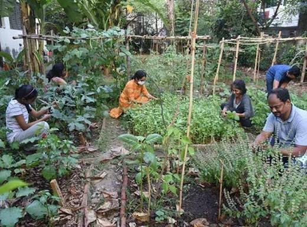
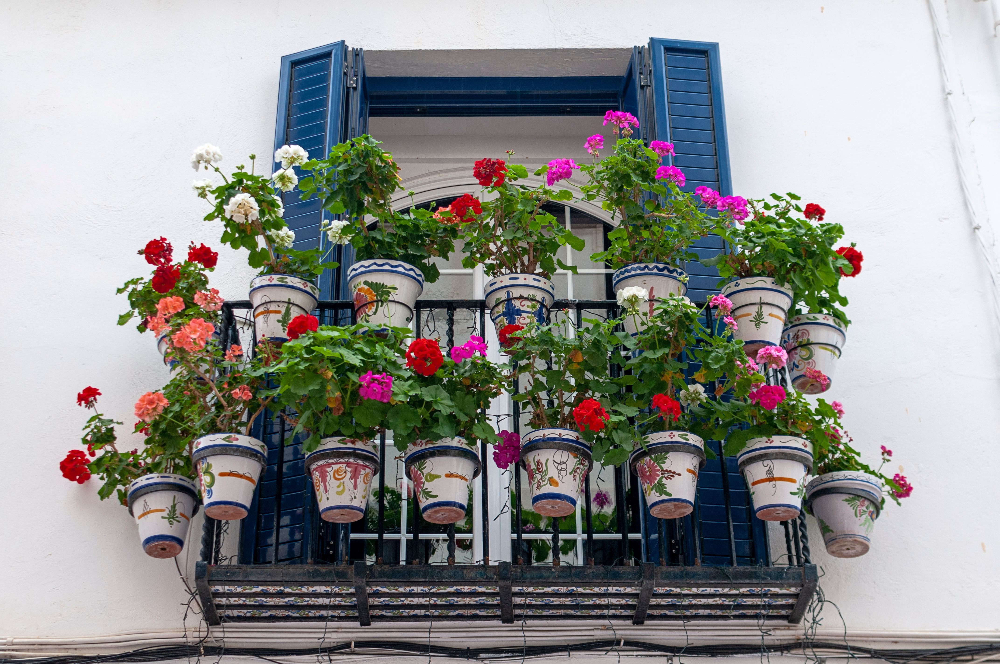
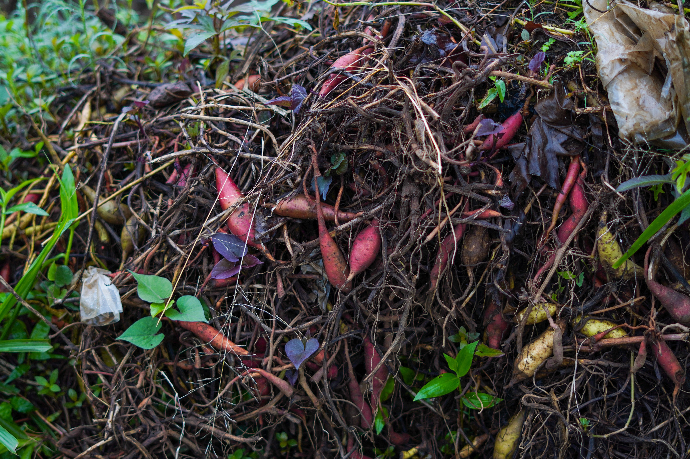
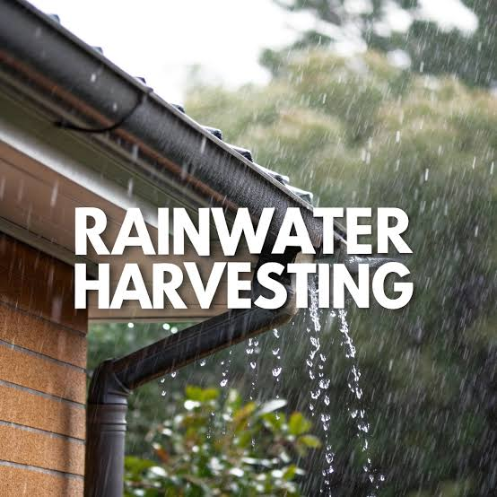

32,000+
Trees & Native Plants Grown
TerraBloom brings people together to transform balconies, rooftops, schools and neighbourhoods into vibrant green spaces. Whether you're planting your first herb or organizing a community garden, every small effort contributes to a healthier, happier environment.
Home Gardens
Communities Connected
Volunteer Satisfaction


TerraBloom believes that meaningful environmental change begins where we live. A small herb garden, a shared compost bin, or a rooftop filled with vegetables can inspire neighbours to work together while creating healthier and greener surroundings.
Our goal is to make sustainable living simple and practical. Whether you have a spacious backyard or a tiny apartment balcony, there are countless ways to reconnect with nature and make a positive impact.
Easy gardening ideas anyone can start.
Learn, volunteer and grow together.
Every project completed through TerraBloom contributes towards cleaner neighbourhoods, healthier ecosystems and stronger community connections. Together, thousands of people are proving that sustainability starts with simple everyday actions.
Trees & Native Plants Grown
Rainwater Conserved
Organic Waste Composted
Active Green Communities
Community Events Organised
Participants Continue Their Green Journey
TerraBloom isn't just about planting trees—it's about helping people build greener habits that naturally fit into their daily lives. From urban gardening and composting to rainwater harvesting and community volunteering, every initiative is designed to be practical, enjoyable and accessible for everyone.
Start Your Green JourneyStep-by-step guides designed for beginners.
Connect with neighbours through green projects.
Everyday practices with long-term impact.
Every contribution helps create healthier, greener neighbourhoods.
Every initiative at TerraBloom is designed to help individuals, families and neighbourhoods adopt sustainable practices that are practical, affordable, and enjoyable for everyone.
Learn how balconies and terraces can become colourful green spaces with herbs, flowers, vegetables and native plants.
Learn MoreTransform everyday kitchen waste into nutrient-rich compost while reducing landfill waste and enriching local gardens.
Learn MoreDiscover simple systems that collect and reuse rainwater for gardening and everyday household purposes.
Learn MoreGrow fresh vegetables, herbs and fruits even in compact urban spaces through simple gardening techniques.
Learn MoreJoin tree plantation campaigns, lake clean-up drives and neighbourhood gardening events organised throughout the year.
Learn MoreAttend practical workshops covering composting, indoor plants, sustainable gardening and biodiversity conservation.
Learn MoreExplore easy-to-follow guides that help beginners build confidence while creating greener homes and healthier communities.

Learn how sunlight, containers and simple maintenance routines can help you grow plants successfully in small spaces.
Read Guide
Discover how fruit peels, vegetable scraps and dry leaves become nutrient-rich compost for healthier plants.
Read Guide
Understand how collecting rainwater can reduce water usage while supporting healthy gardens throughout the year.
Read GuideMeet volunteers, gardening enthusiasts and local communities while learning practical sustainability skills through interactive events.
Learn beginner-friendly gardening techniques, soil preparation and plant care.
Join volunteers to plant native trees across parks and public spaces.
Learn simple composting methods suitable for apartments, schools and residential societies.
Behind every green corner is a story of people coming together to create healthier and happier communities.
Our apartment terrace was unused for years. TerraBloom's beginner gardening guides helped us transform it into a colourful space filled with herbs and flowering plants. It has now become everyone's favourite place to relax.

We started composting with simple kitchen waste, and today our entire society uses the compost for community gardens. The project brought neighbours together while reducing waste significantly.

I never imagined gardening could be this simple. The seasonal planting guides and workshops gave me the confidence to begin growing vegetables right on my balcony.